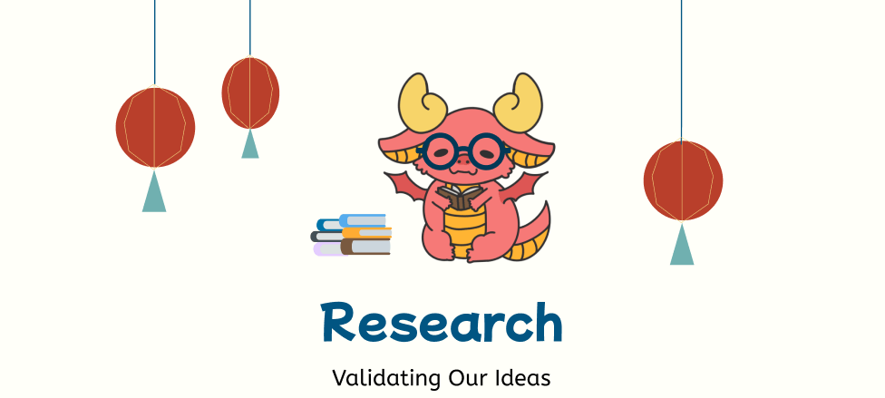

Date: Sept. 2024 - Dec. 2024
Roles: UX/UI Designer / UX/UI Researcher
Tools: Figma, FigJam, Google Suite, and Procreate
Kim’s Dragon is a food truck located on Drexel University’s campus in Food Truck Alley, serving various Chinese dishes. For this class project, our team was tasked with designing an app for Kim’s Dragon. Over ten weeks, we focused on developing a strong brand identity and creating an intuitive user flow for the app. Working as a team presented challenges, such as coordinating meeting times and consolidating diverse ideas, but we maintained a respectful and collaborative environment. Through brainstorming, refinement, implementation, and testing, we established a streamlined workflow. This iterative process guided our progress each week once the design phase began. We started with foundational user research, using methods like "Fly on the Wall" observations and user interviews to gather insights. From there, we moved on to sketches, wireframes, and low- and mid-fidelity prototypes. After testing and refining our high-fidelity prototype, we finalized our design, incorporating all essential features and finishing touches to create a complete and user-friendly product.
Key features of our app included:
Our group decided to work on the Kim’s Dragon truck, an Asian cuisine truck with minimal branding and a complicated menu. We decided to challenge ourselves to not only create an app but a brand identity for Kim’s Dragon.
The project was structured with weekly milestones, spanning a total of ten weeks. Balancing this project alongside other classes and assignments presented significant challenges. Time constraints often made scheduling difficult, and while we managed to stay on track, certain meetings occasionally had fewer team members present due to conflicting commitments. Despite these obstacles, we maintained steady progress and adapted as needed to ensure the project's success.
The challenge was to work collaboratively with a team to create an app for a food truck that optimizes their sales and workflow while also being easy and intuitive for users.
Our design process followed a cyclical approach that included research, ideation, consolidation, implementation, and user testing. User testing played a pivotal role in shaping many of our design decisions, ensuring that the app was crafted with the user at the forefront. While some of this process was structured within the class framework, much of it also emerged from our group meetings.
As we iterated on our designs and incorporated feedback from each round of testing, we experienced bursts of creativity and ideation. These sessions allowed us to explore a range of possibilities before narrowing our focus to prioritize the most impactful elements to refine and develop further.
This process created various steps of research that we would refer to throughout our design process. In the cyclical nature of our project structure, we often returned to interviews and testing throughout the process. Our initial research was the first stepping stone into our informative design plan, then through testing and interviews, we gained meaningful insights to inform our iterations.
Here are some of the main research we did:
In order to understand our audience, we conducted naturalistic observations through methods like fly-on-the-wall. From these observations, we noticed 3 main groups: students, staff, and construction workers. Kim's Dragon serves 3 main demographics. However, we chose to focus on students for our design. Below is an example of a student persona.
We also conducted competitor analysis to identify our competitors. From the analyses, we compared the pros and cons of different food services and incorporated the strengths into our app and watched for an opportunity for innovation.
The affinity mapping process allowed our thought process to run rampant. We were able to connect a lot of ideas and some to the following conclusions to help us build out app.
The NUF exercise helped our team narrow down our avenue and keep our scope realistic. Here our highest NUF scores are highlighted.
Finally, we created a journey map to reflect the user's journey through the app and their emotions.
Our designs were changed multiple times as we recieved feedback from our users. Here is an example of the changes being applied to our home or landing page over time.
Our team's research efforts were instrumental in uncovering both the challenges faced by Kim’s Dragon and opportunities to elevate its brand and user experience. Observational research, including the "Fly on the Wall" method, revealed operational patterns such as peak activity on Friday afternoons and a core customer base of Drexel students and employees. Customers appreciated the truck’s efficient checkout process and minimal wait times but found its expansive and confusing menu to be a significant pain point. These insights laid a strong foundation for designing an app that tackled both operational inefficiencies and customer frustrations when designing an app for Kim’s Dragon.
The Affinity Map exercise synthesized data from interviews, observations, and competitor analysis, pinpointing key priorities for the app's design. Customers expressed a need for simpler menu navigation, detailed ingredient information, and better customization options. Opportunities to enhance accessibility and engagement emerged, including features like multiple payment methods, a loyalty rewards program, and dietary preference filters. User testing across various design iterations validated these choices, refining elements such as navigation cues, menu clickability, and the addition of delivery tipping options. These iterative refinements ensured the app effectively addressed user needs while reinforcing Kim’s Dragon’s brand identity.
The project was a resounding success, offering invaluable lessons and fostering growth within our team. Through collaboration, we developed an app that exceeded its objectives—fun, intuitive, and significantly enhancing Kim’s Dragon’s value. Feedback from users affirmed our efforts, highlighting the app's seamless and enjoyable experience. By prioritizing a user-centered approach at every step, the final design was not only functional but delightful, leaving our team proud of our design and efforts this term.